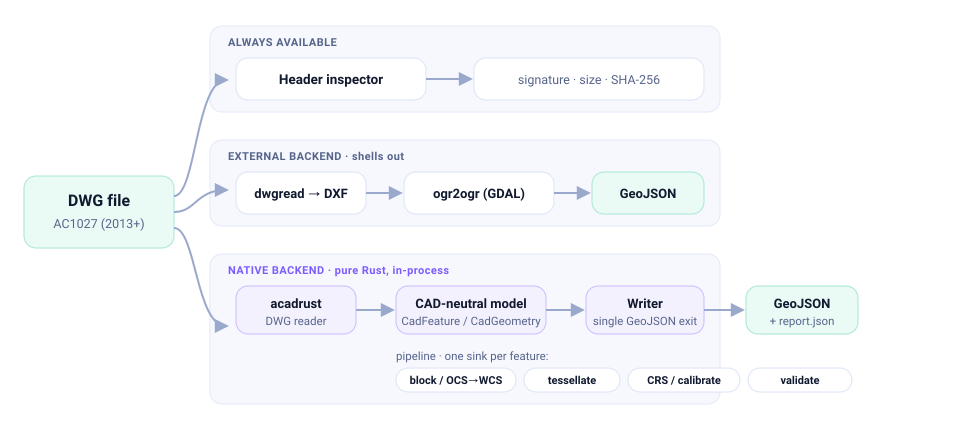
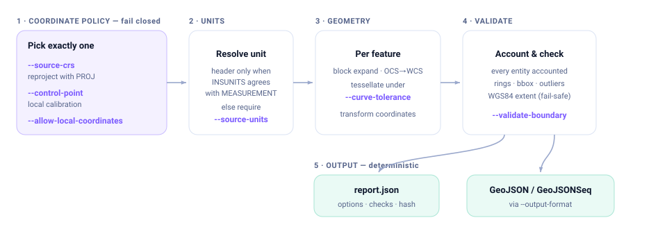

Turn DWG drawings into auditable GeoJSON.
A command-line converter that never presents unreferenced CAD coordinates as geographically correct — with per-entity diagnostics and deterministic, traceable reports.

Built for engineering data, not screenshots
Every design choice serves one goal: output you can trust and verify — no silent loss, no fake georeferencing.
Fails closed on CRS
Requires a source CRS or an explicit local-coordinate override. Drawing units are trusted only when the header is unambiguous; otherwise you state them.
No silent loss
Every unsupported, skipped, failed, or approximated entity is counted with a reason and sample handles. The accounting must balance — or it warns.
Pure-Rust native backend
Reads DWG in-process via acadrust — no LibreDWG or GDAL needed. A self-contained binary that runs anywhere.
Real engineering geometry
OCS→WCS arbitrary-axis transforms, bulge arcs, deterministic curve tessellation, nested INSERT/MINSERT expansion, and hatch loops with holes.
PROJ reprojection & calibration
In-process PROJ reprojection with resolved units and axis order, plus local control-point calibration for drawings without a CRS.
Deterministic reports
Same input, same bytes. A sidecar report records options, tool versions, source hash, bounding boxes, geometry checks, and outlier scans.
Entity coverage
The native backend converts the common civil/utility drawing set — and every one of the 44 acadrust entity types has a documented policy, checked by a test.
Bulge arcs and splines tessellate under an explicit chord tolerance; hatches nest into Polygons/MultiPolygons with holes; blocks expand with full transform composition and provenance. Deliberately unsupported types (rays, ACIS solids) and not-yet-converted types (dimensions, leaders, meshes) are reported, never guessed.
How it works
One header inspector, two backends, and a single writer — the pure-Rust path builds a CAD-neutral model that every transform and check operates on.

Conversion pipeline & key parameters
Fail closed on coordinates, resolve units, transform, validate, then write deterministically.

Install & run
Grab a self-contained binary, pull the container, or build from source.
# Prebuilt release binary (Linux/macOS/Windows)
# from github.com/milkway/dwg2geo/releases
# or build from source (Rust 1.85+)
$ cargo build --release --features native-backend
# add PROJ reprojection (needs system PROJ ≥ 9.6)
$ cargo build --release --features native-reproject# Slim container — native binary only, 28 MB, MIT-clean
$ docker build -t dwg2geo .
$ docker run --rm -v "$PWD:/w" dwg2geo \
inspect /w/drawing.dwg --json
# check optional external tools
$ dwg2geo doctorInspect
Signature, version, units, extents, layer & entity histogram.
Choose CRS
Source CRS + units, or explicit local coordinates.
Convert
Native or external backend to deterministic GeoJSON.
Verify
Read the sidecar report — accounting, checks, bounds.
Transparent by construction
Multi-platform CI, a three-way independent audit, a verified architecture refactor, and a clean license posture.
CI on every platform
fmt · clippy -D warnings · full test suite on Linux, macOS, and Windows, plus a PROJ-enabled reprojection job.
Audited & verified
Independent correctness, completeness, and robustness passes; findings fixed and re-verified against a baseline build.
SBOM & licenses
A CycloneDX SBOM and a full third-party license report ship with the repo; a CI gate blocks any new copyleft dependency.
| Component | License | Distribution |
|---|---|---|
dwg2geo + native deps | MIT / permissive | Redistribute freely — release binaries & slim container are MIT-clean. |
acadrust (DWG reader) | MPL-2.0 | File-level copyleft; binary distribution is unrestricted, no effect on dwg2geo's source. |
| LibreDWG (external backend) | GPL-3.0 | Invoked as a separate process, never bundled — installed by the user, so no GPL propagation. |